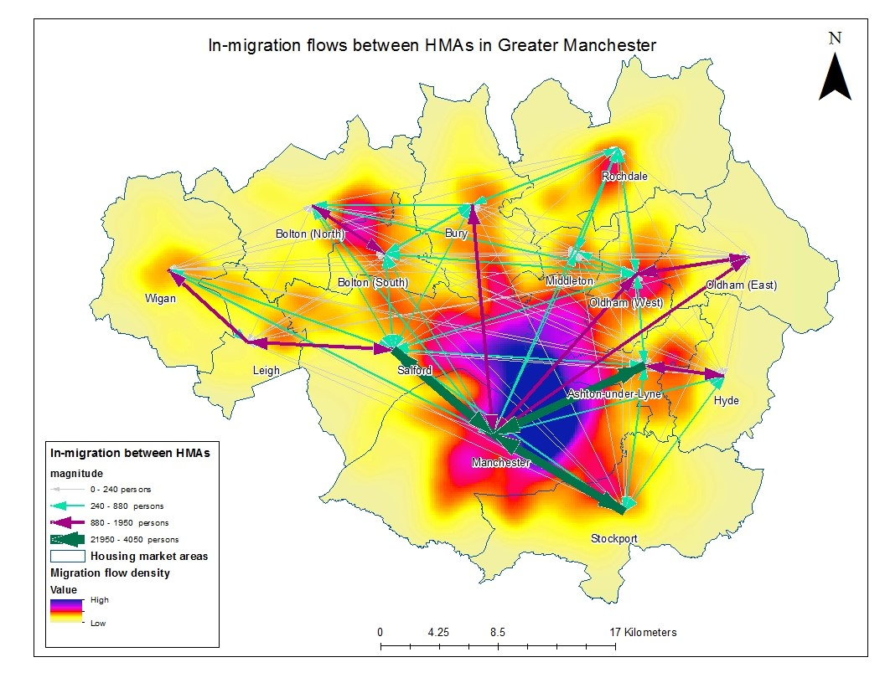

Map 1: New built house transactions with a scale of paid price in 2011

New built house transactions with a scale of paid price in 2011.
Map 2: New built house transactions with a scale of paid price in 2011
New built house transactions with a scale of paid price in 2011.
Map 3: Out-mover numbers across 14 housing market areas in Greater Manchester.
Out-mover numbers across 14 housing market areas in Greater Manchester.
Map 4: In-migration and migration density across 14 HMAs
In-migration and migration density across 14 HMAs
Map 5: Reciprocal migration flows between Central Rochdale and other submarkets
Reciprocal migration flows between Central Rochdale and other submarkets
This paper delves into the critical yet underexplored intersection of spatial migration linkages and their impact on the housing market, with a specific focus on local housing market areas in Greater Manchester, UK. Recognizing the importance of understanding how migration patterns influence housing demand and supply, the study employs Geographic Information Systems (GIS) to analyze 2011 migration flow data and house price data. Through this innovative approach, the research uncovers distinct spatial migration patterns across various local areas, revealing the presence of specific linkages that affect the housing market. The findings highlight the significance of identifying and addressing problematic spatial linkages to enhance the functioning of local housing markets. By pinpointing areas with issues, policymakers and planners can implement targeted interventions to improve housing conditions, adjust housing supply, or enhance transportation systems, thereby better meeting the needs of households. The paper's major contribution lies in its demonstration of the GIS approach as a powerful tool for revealing valuable insights hidden within large datasets. By leveraging this technology, the research provides new knowledge on the spatial relationships between migration and housing market dynamics at the local level, offering a novel perspective that could guide future housing policy and planning decisions.